HIGHcannot tolerate any notification/migration delay
A single task often needs to complete in microseconds.
Tight latency targets leave no room for suboptimal or slow decisions.
Scheduler sometimes benefits from app-level info, such as:
But today's scheduling stacks fall short on all three.
Scheduler sometimes benefits from app-level info, such as:
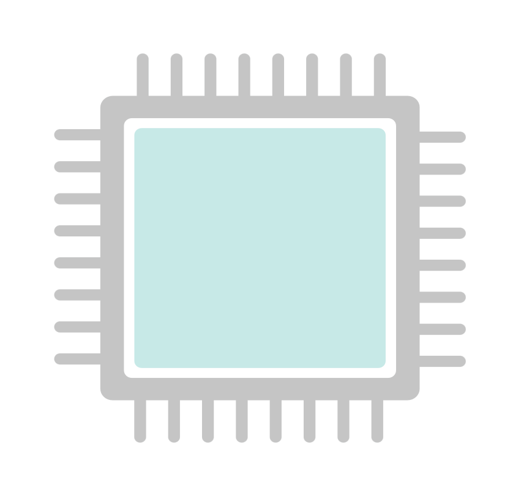


Scheduler sometimes benefits from app-level info, such as:
Scheduler sometimes benefits from app-level info, such as:
Advancing microsecond-scale scheduling across three layers
Advancing microsecond-scale scheduling across three layers
We are here.
RocksDB workload: 95% GET task (~1 μs) and 5% SCAN task (~260 μs).
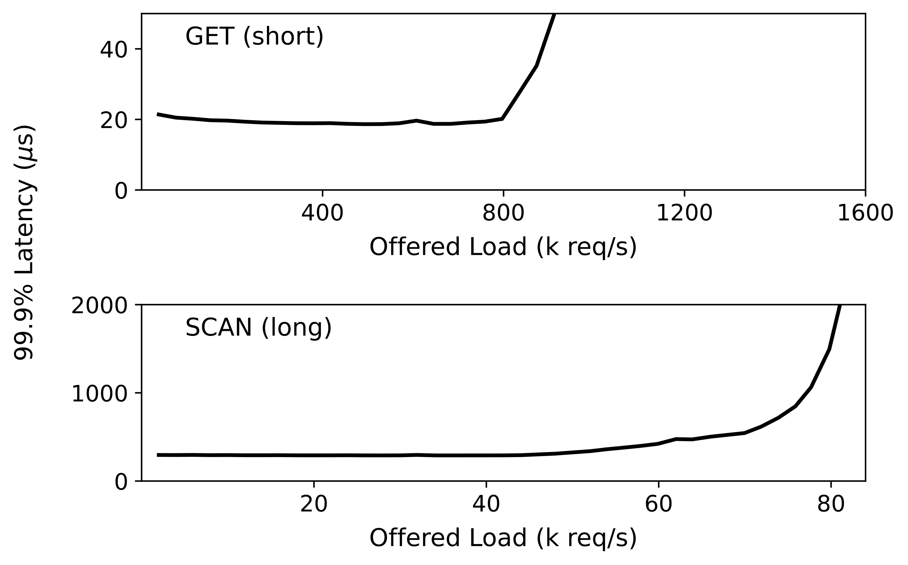
Short GETs are blocked by long SCANs.


Requests run in tens of μs — a ms-scale preemption gap inflates tail latency.
To find out, we built two preemptive user-level runtimes: Aspen-KB and Aspen-Go.


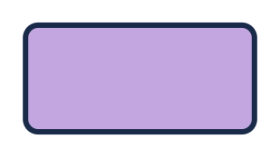


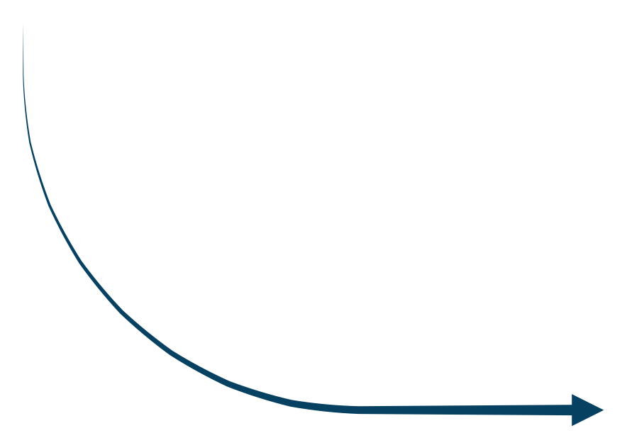
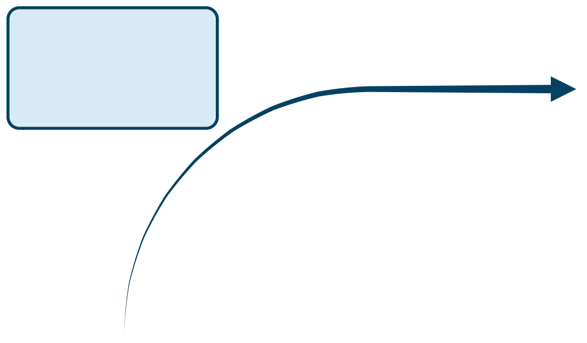


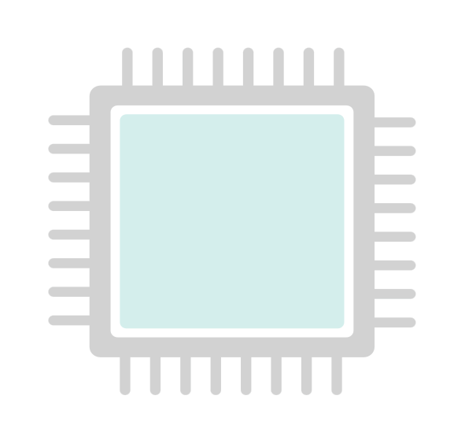


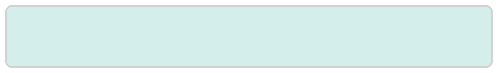


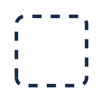


RocksDB workload: 95% GET task (~1 μs) and 5% SCAN task (~260 μs).
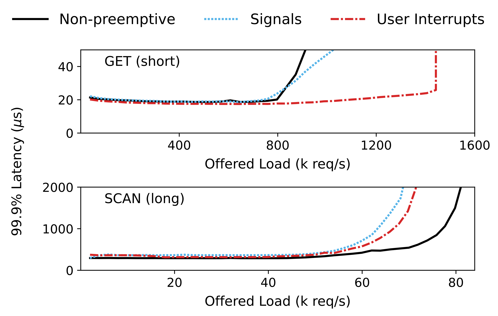
BadgerDB workload: 99% GET task (~5 μs) and 1% SCAN task (~800 μs).
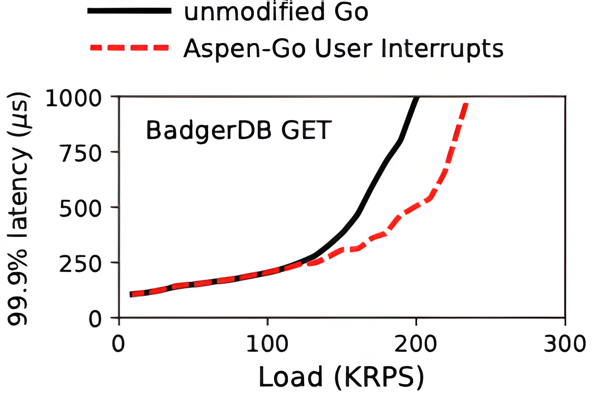
Can user interrupts help achieve fine-grained preemption?
Fine-grained preemption
becomes feasible.
If the runtime isn’t built for it,
benefits are limited.
Runtime design matters.
Advancing microsecond-scale scheduling across three layers
We are here.
RocksDB workload: 99.5% GET task (~1 μs) and 0.5% SCAN task (~260 μs).
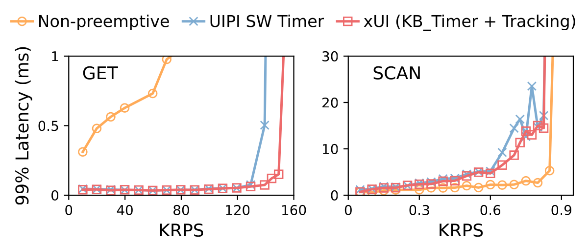
xUI achieves 10% higher throughput than user interrupts.
Advancing microsecond-scale scheduling across three layers
We are here.
| System | Wakeup Interface | What the interface conveys |
|---|---|---|
| Linux | wake_up_process() | READY |
| Go | goready() | READY |
| Caladan | thread_ready() / thread_ready_head() | READY(head or tail of runqueue) |
All say READY (and maybe queue position).
thread_ready() says waiter 1 is ready — but doesn’t say this wakeup is urgent.
How soon must the wakee run?
Should wakee and waker run in parallel?
Should co-woken threads run in parallel or sequentially?
thread_wakeup() with intentvoid thread_wakeup(thread_t *wakee,
enum wakee_urgency,
enum placement);wakee_urgency
HIGHMEDIUMNONEplacement
SEPARATEANY
Group interface: thread_wakeup_group(thread_t[], PARALLEL or ANY)
thread_wakeup(waiter, HIGH, SEPARATE)HIGH × SEPARATE.
HIGH: waiter 1 must run on the current core now — but waker still running.
waker forced to yield.
waiter 1 takes the core.
fast lock handoff, contention relieved.
but wait — how does the scheduler handle the waker?
the scheduler picks a remote core.
SEPARATE: waker takes the remote core by preemption.
waker lands on remote; both run in parallel.
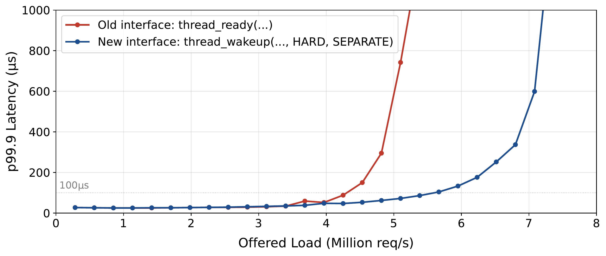
Gains hold across a wide config space.
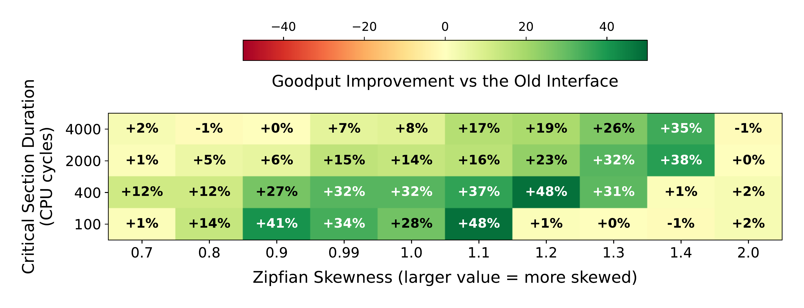
(use this as a backup slide to save time)
We are here.
| The 6 common semantics | Description | Used in (apps) |
|---|---|---|
| Thread role | Is this thread user-facing or background? | 20 / 20 |
| Blocking | Is this thread blocking others, and how many are waiting? | 20 / 20 |
| Internal queue depth | How much work is waiting for this thread to handle? | 19 / 20 |
| Request type | Which request is this thread serving? | 18 / 20 |
| Performance stall warning | Will the app stall if this thread doesn’t run soon? | 16 / 20 |
| Co-scheduling group | Should this thread run simultaneously with others? | 9 / 20 |